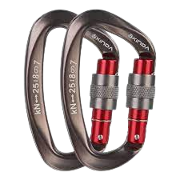

Rock climbing shoes are a critical piece of equipment for all types of climbing.
The rubber of the sole provides a level of traction that is not found in any other type of shoe.
This traction is essential as the user could be standing on all types of grips and rock formations.
Similar to regular athletic shoes, climbing shoes have standard mens and womens sizes. However, many people choose to size down
so that they can optimize performance. There are many different types of climbing shoes, made for all different skill levels and preferences.
Typically, beginners will start out with all-around
shoes, these offer traction at the front, but support in the back so that
the risk of injury is significantly decreased. Additionally, the fit should be
snug but allow for flexibility without pinching or pulling the skin since
climbing shoes are typically worn barefooted. Choosing a shoe is ultimately up to
the users preference and what they are comfortable with.
Harness
A climbing harness is an essential device that allows the climber to be safely attached to the climbing rope.
Most harnesses have the same features, two leg loops, a waist belt with a locking belt, a belay loop, and gear loops.
A harness should fit snugly above you hipbones and should be comfortable. The leg loops should be snug but not tight.
The harness is used by both climbers and belayers to ensure a safe climb.
Carabiner
A carabiner is a strong metal clip that allows climbers to link their ropes and harnesses together.
There are many shapes and types of carabiners. The type of carabiner that is considered the safest is
the locking gate carabiner. These carabiners can be locked in a closed position to provide extra protection. They either feature a manual lock or an auto lock.
The locking gate carabiner is heavier than most other styles, but is still incredibly popular due to the added safety.
The carabiner must be strong so that it will not bend and possibly detach while in use.

Rope
The ropes used in climbing are designed specifically for the sport. The rope connects the climber to the gear in the climbing wall and to the belayer.
These ropes are used by climbers to help prevent dangerous falls.
Rock climbing ropes are dynamic ropes that are designed to stretch and absorb the impact of a fall.
The ropes are have a diameter of approximately 9.50-10.00 mm and can range from 30-50 m indoors and
30-80m outdoors, with the standard being 60m.
Climbing ropes must meet strict requirements to ensure that they are safe and will not break when used.
 Climb Central
Climb Central